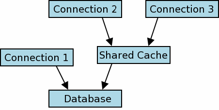

由WaterRun使用gpt-5.1-codex-mini翻译
体积小。速度快。可靠。
任选其三。
任选其三。
从 3.3.0 版本（2006-01-11）开始， SQLite 包含一个专门的“共享缓存” 模式（默认禁用），用于嵌入式服务器。如果 启用共享缓存模式且某个线程建立多个连接 到同一数据库，这些连接会共享单个数据和架构缓存。 这可以显著减少系统所需的内存和 IO。
在 3.5.0 版本（2007-09-04）， 共享缓存模式做出修改，使得同一 缓存可以在整个进程范围内共享，而不仅限于 单个线程。在此更改之前，线程之间传递数据库连接 受到限制。这些限制在 3.5.0 更新中被取消。 本文档描述的是 3.5.0 版本的共享缓存模式。
共享缓存模式在某些情况下会改变 锁模型的语义。本文档对此作出说明。 假定读者对普通 SQLite 锁模型有基本了解（详见 SQLite 版本 3 的文件锁和并发 的详细说明）。
共享缓存模式是一个过时的特性。不推荐使用共享缓存。 大多数共享缓存的用例更适合 WAL 模式。
共享缓存模式在 2006 年应 Symbian 开发者的请求被发明。他们的问题是，如果 电话上的联系人数据库正在同步，就会锁定数据库文件。 接着如果有来电，数据库锁会阻止他们 查询联系人数据库，以便找到来电的适当铃声， 或在屏幕上显示来电者的照片，等等。 WAL 模式（约 2010 年）为此问题提供了更好的解决方案， 因为它允许在不破坏事务隔离的情况下同时访问。
建议从源代码构建自己的 SQLite 副本的应用程序 使用 -DSQLITE_OMIT_SHARED_CACHE 编译时选项， 因为由此产生的二进制文件会更小且更快。
本文所述的共享缓存接口仍将在 SQLite 中继续被支持，以确保完全的向后兼容性。 然而，仍不推荐使用共享缓存。
从另一个进程或线程的角度来看，两个 或多个 数据库连接 使用共享缓存时会显得像一个单一 连接。用于在多个共享缓存或常规数据库用户之间仲裁的锁协议在其他地方进行了描述。
|
 |
图 1
图 1 描述了一个示例运行时配置，其中三个 数据库连接已经建立。连接 1 是一个普通 SQLite 数据库连接。连接 2 和 3 共享一个缓存。 普通的锁协议用于在连接 1 和 共享缓存之间串行化数据库访问。用于在连接 2 和 3 之间 串行化（或不串行化，见下文“读未提交隔离模式”）访问共享缓存的内部协议 在本节的其余部分中进行了描述。
共享缓存锁模型有三个级别： 事务级锁、表级锁和架构级锁。它们在以下三个子节中进行描述。
SQLite 连接可以开启两种事务，读事务和写事务。 这不是显式完成的，事务在首次对数据库表写入时 隐式转换为写事务，而在此之前则为读事务。
在任何时间点，最多只有一个连接可以对 单个共享缓存打开写事务。这可以与任意数量的读 事务共存。
当两个或多个连接使用共享缓存时，会使用锁 在每个表级别串行化并发访问尝试。表支持 两种类型的锁，“读锁”和“写锁”。锁授予 连接 —— 在任意时刻，每个数据库连接在每一个数据库表上要么拥有 读锁、写锁，要么没有锁。
在任意时刻，单个表可以有任意数量的活跃读锁 或一个活跃写锁。要从表中读取数据，连接必须 先获得读锁。要写入表，连接必须获得该表的写锁。 如果无法获得所需的表锁，查询失败并向调用者返回 SQLITE_LOCKED。
一旦连接获得表锁，直到当前事务（读或写）结束前 该锁都不会释放。
上述行为可以通过使用 read_uncommitted pragma 将隔离级别从串行（默认）改为读未提交，从而稍作修改。
处于读未提交模式的数据库连接不会像上文那样 在读取数据库表之前尝试获取读锁。如果在读取期间 另一数据库连接修改了表，这可能导致查询结果不一致， 但这也意味着处于读未提交模式的连接打开的读事务既不会阻塞 也不会被其他连接阻塞。
读未提交模式对写入数据库表所需的锁没有影响 （即读未提交连接仍必须获取写锁，因此数据库写入仍可能阻塞或被阻塞）。 此外，读未提交模式对下述规则（见“架构（sqlite_schema）级锁”） 所列的 sqlite_schema 锁也没有影响。
/* 设置 read-uncommitted 标志的值： ** ** True -> 将连接设置为读未提交模式。 ** False -> 将连接设置为串行（默认）模式。 */ PRAGMA read_uncommitted = <boolean>; /* 检索当前 read-uncommitted 标志的值 */ PRAGMA read_uncommitted;
sqlite_schema 表像所有其他数据库表一样 支持共享缓存的读写锁（见上文描述）。以下特殊规则也适用：
在 SQLite 3.3.0 到 3.4.2 版本中，当启用共享缓存模式时， 一个数据库连接只能由调用 sqlite3_open() 创建它的线程使用。 并且连接只能在同一线程中与另一个连接共享缓存。 这些限制从 SQLite 3.5.0 版本（2007-09-04）开始取消。
在旧版本的 SQLite 中， 共享缓存模式无法与虚拟表一起使用。 该限制在 SQLite 3.6.17 版本（2009-08-10）中被移除。
共享缓存模式在每个进程级别启用。使用 C 接口，可通过以下 API 全局启用或禁用 共享缓存模式：
int sqlite3_enable_shared_cache(int);
每次调用 sqlite3_enable_shared_cache() 都会影响随后使用 sqlite3_open()、sqlite3_open16() 或 sqlite3_open_v2() 创建的数据库连接。 已有的数据库连接不受影响。 每次调用 sqlite3_enable_shared_cache() 都会覆盖 同一进程内的所有先前调用。
通过使用 sqlite3_open_v2() 创建的各个数据库连接可以 通过为第三个参数使用 SQLITE_OPEN_SHAREDCACHE 或 SQLITE_OPEN_PRIVATECACHE 标志选择是否参与 共享缓存模式。使用这两个标志中的任意一个都会覆盖 sqlite3_enable_shared_cache() 所设定的 全局共享缓存模式设置。两个标志都不应同时使用； 如果在 sqlite3_open_v2() 的第三个参数中同时使用 SQLITE_OPEN_SHAREDCACHE 和 SQLITE_OPEN_PRIVATECACHE，则行为未定义。
当使用 URI 文件名 时，可以使用 “cache”查询参数来指定数据库是否使用共享缓存。 使用“cache=shared”启用共享缓存，“cache=private”禁用共享缓存。 通过 URI 查询参数指定数据库连接的缓存共享行为 可以在 ATTACH 语句中控制缓存共享。 例如：
ATTACH 'file:aux.db?cache=shared' AS aux;
从 SQLite 3.7.13 版本（2012-06-11）开始， 只要使用 URI 文件名 创建数据库，就可以在 内存数据库 上使用共享缓存。 为了向后兼容，如果使用未修饰的名称“:memory:”打开数据库， 则始终禁用内存数据库的共享缓存。 在 3.7.13 之前，无论使用何种数据库名称、 当前系统共享缓存设置，或查询参数或标志， 内存数据库的共享缓存始终被禁用。
为内存数据库启用共享缓存可使同一进程中的两个或多个 数据库连接访问同一个内存数据库。 处于共享缓存中的内存数据库会在最后一个连接关闭时自动 删除并释放内存。
本页最后更新时间为 2025-06-12 09:10:23Z